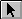
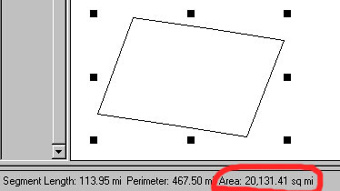

Несколько способов быстро определить площадь полигона.
Существует несколько способов определить и внести в атрибутивную таблицу площадь полигонов
Сделав тему редактируемой Theme\Start Editing, выберите один из ее полигонов инструметом Pointer  и видите его площадь в статусной строке внизу экрана Arcview.

В этой строке также отображается и другая информация о полигоне, такая как периметр полигона, длина сегмента.
Площадь полигона в этом случае рассчитывается исходя из единиц карты (distance
units), если вид спроектирован и единицы расстояния - километры, то площадь
в статусной строке будет отображаться в квадратных километрах и т.п. Если
выделять указателем несколько отдельных объектов, то площадь в статусной
строке будет равна суммарной их площади.
Этот способ будет работать неправильно для полигонов объединенных командой
Union features не имевших при этом общего участка границы (то есть объединение
отдельных объектов), площадь в этом случае будет расчитана неправильно.
Может производится для нескольких объектов
сразу (хотя ничего не мешает определить площадь только одного полигона).
Заключается в получении в существующем поле атрибутивной таблицы значения
площади соответствующего полю этой таблице полигона.
1. Выбрать один или несколько полигонов темы в виде (или самой таблице),
инструментом Select feature (если тема не редактируемая), нужно
сделать таблицу редактируемой Table\Start editing,
2. Создать новое поле в таблице Edit\Add field, тип поля Number.
Если нужно добавить значение поля в уже существующее поле, то просто выбрать
поле (3)
3. Щелкнуть на заголовке поля
4. Выбрать инструмент Calculate (Field Calculate)
5. В появившемся окне Field Calculator'а ввести следующее выражение
[Shape].ReturnArea
6. После выполнения этого запроса в поле, выбранном для записи значений, появятся значения площади для выбранных записей.
Недостаток этого метода заключается в том, что если вы работаете с темами находящимися в проекции Lat\Long то результаты измерения площадей вам врядли будут полезны, это также касается спроектированного вида, то есть если исходная тема(ы) в проекции Lat\Long проектируются в любую проекцию, то оценка площади все равно будет производится в единицах измерения исходного материала (подробнее об этом методе, работающем и в спроектированном виде).
Если вы работаете уже со спроектированными материалами (то есть проекция задается не в Arcview - View\Properties\Projection) то этот метод вполне подходит для быстрого получения информации о площади для любого количества объектов.
Подключив этот скрипт можно расчитывать площадь объектов зависящую от проекции вида и единиц измерения которые выставляются в параметрах вида, также этот скрипт успешно работает и в неспроектированном виде с темами спроектированными в Arcinfo, Arcview Reprojection Utility и т.д.
Дата создания: 20.08.2002
Автор(ы): Максим Дубинин